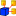

This documentation is not finished. Please help and contribute documentation.
See Draft ShapeString for good documented Command. Gui Command gives an overview over commands. And see List of Commands for other commands.
Go to Help FreeCAD to contribute.
|
| Posizione nel menu |
|---|
| Visualizza → Ambiente → |
| Ambiente |
| Tutti |
| Avvio veloce |
| ... |
| Vedere anche |
| ... |
Descrizione
Questo comando serve per attivare l'interfaccia grafica (GUI) e gli strumenti di uno specifico ambiente di lavoro.
E' possibile eseguirlo tramite tre diverse modalità:
- il menu Visualizza,
- il menu a tendina, oppure,
- un comando Python.
Sono inoltre disponibili due voci speciali: Nessuno (nessun ambiente) e Completo (tutti gli ambienti contemporaneamente).
Utilizzo
Sovente il progetto inizia in un ambiente, ad esempio con uno Schizzo, poi prosegue in un ambiente diverso, ad esempio con Parte, per creare degli oggetti.
Si può passare dall'ambiente corrente ad uno nuovo con uno dei seguenti modi:
- Nella barra principale aprire il menu Visualizza → Ambiente e selezionare un ambiente. Questo menu è sempre disponibile, anche quando in precedenza è stato selezionato l'ambiente Completo o Nessuno.
- Nella barra principale aprire il menu a tendina e selezionare un ambiente. Questo menu non è disponibile quando in precedenza è stato selezionato l'ambiente Completo o Nessuno.
Tramite console Python
- Digitare il comando nella console, ad esempio: Gui.activateWorkbench("DraftWorkbench") avvia l'ambiente Draft. Sempre possibile.
Esempi
Avvio dal menu a tendina:

Avvio da console Python:
{kind=link}
Tramite console il comando può anche essere copiato:

Altri riferimenti
Per una descrizione generale degli Ambienti consultare la pagina Ambienti di lavoro.
Per conoscere meglio i singoli ambienti consultare le rispettive pagine di presentazione.
- Nessuno
-
 Architettura
Architettura -  Assemblaggio
-
 Completo
Completo -
 Draft
Draft -
 Disegno
Disegno - FEM
-
 Immagine
Immagine - Inspection
- Machining Distortion
-
 Mesh
Mesh -
 OpenSCAD
OpenSCAD -
 Parte
Parte -
 PartDesign
PartDesign -
 Grafico
Grafico - Punti
-
 Raytracing
Raytracing - Reverse Engineering
-
 Robot
Robot -
 Ship
Ship -
 Schizzo
Schizzo -
 Start center
Start center - Test framework
-
 Web
Web
{kind=link}